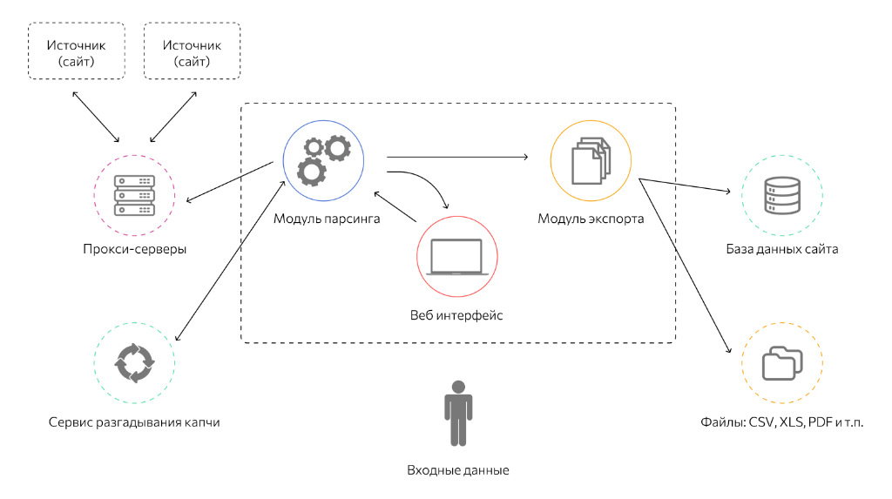

Что такое веб-парсинг и как он работает? (Подробное руководство)
Определение и базовые концепции
Веб-парсинг (Web Scraping, веб-скрапинг) — это автоматизированный процесс сбора неструктурированных данных с веб-страниц и их последующего преобразования в структурированный формат (например, базы данных, электронные таблицы Excel, CSV-файлы или JSON-документы). В отличие от ручного копирования текста человеком, парсинг выполняется специализированными программами — скриптами или готовыми приложениями-парсерами.
Суть процесса заключается в симуляции действий обычного пользователя: программа отправляет HTTP-запрос к серверу, сервер возвращает HTML-код страницы, после чего программа анализирует этот код с помощью регулярных выражений, XPath или DOM-парсеров, извлекая только полезную информацию, отбрасывая дизайн (CSS) и интерактивные элементы (JavaScript), если они не несут смысловой нагрузки.

Разница между кроулингом и скрапингом
Важно различать два смежных, но принципиально разных понятия в веб-аналитике:
- Кроулинг (Web Crawling) — это глобальный процесс обхода страниц интернета поисковыми роботами (например, Googlebot, YandexBot) для индексации. Робот просто переходит по ссылкам (href), строит граф связей и скачивает страницы целиком, не пытаясь понять смысл конкретного фрагмента текста (например, где цена, а где отзывы). Главная цель кроулера — найти новые URL-адреса.
- Скрапинг (Web Scraping) — это целенаправленное извлечение конкретных, заранее известных данных (цен, контактов, характеристик товара, отзывов) из уже скачанного или отрендеренного кода страницы. Скрапер знает, что цена лежит внутри
<span class="price-value">, и достает только ее.
Законное и этичное применение парсинга (White-Hat)
Парсинг — это мощный инструмент, который лежит в основе многих легальных и крайне прибыльных бизнес-процессов. Современная цифровая экономика не могла бы существовать без обмена данными. Вот основные примеры легального использования технологий скрапинга:
- Мониторинг цен (Price Intelligence): Крупнейшие интернет-магазины и маркетплейсы ежечасно собирают цены сотен конкурентов. Это позволяет алгоритмам динамического ценообразования автоматически снижать или повышать цены на свои товары, максимизируя прибыль и оставаясь привлекательными для покупателей.
- Агрегаторы новостей, недвижимости и авиабилетов: Такие сервисы, как Aviasales, Яндекс.Недвижимость или Google News, собирают данные из тысяч источников, чтобы агрегировать их и показать пользователю в едином, удобном интерфейсе с возможностью фильтрации.
- Аналитика рынка и машинное обучение (Data Science & ML): Для обучения больших языковых моделей (LLM, таких как ChatGPT или Claude) требуются петабайты текстовых данных. Сбор отзывов, комментариев, постов в социальных сетях и форумах для анализа тональности (Sentiment Analysis) и потребительских предпочтений — классическая задача скрапинга.
- SEO-аудит и технический мониторинг: Парсинг собственных сайтов используется SEO-специалистами для поиска "битых" ссылок (возвращающих ошибку 404), дублирующихся мета-тегов Title и Description, отсутствующих атрибутов
altу изображений и других технических ошибок, мешающих продвижению. - Генерация лидов (Lead Generation): B2B-компании автоматизируют сбор контактных данных (названий компаний, публичных email-адресов из раздела "Контакты", номеров телефонов) из открытых справочников типа 2GIS или Yellow Pages.
Критическое примечание по этике: Легальный, этичный парсинг всегда должен уважать правила, прописанные администратором сайта в файле robots.txt. Кроме того, парсер не должен создавать избыточную нагрузку на сервер-донор. Рекомендуется устанавливать задержку (delay) между запросами минимум в 1-3 секунды, чтобы процесс не превратился в несанкционированную DDoS-атаку.
Темная сторона парсинга (Black-Hat)
К сожалению, доступность инструментов парсинга привела к тому, что они часто используются для вредоносной, неэтичной, а иногда и прямо незаконной активности. К такому (Black-Hat Scraping) использованию относятся:
- Кража контента (Scraping for Plagiarism): Массовое копирование уникальных статей, фотографий, баз данных с чужих сайтов для создания сайтов-клонов, дорвеев или заработка на арбитраже трафика без создания собственной ценности.
- Сбор персональных данных: Тотальный парсинг email-адресов, номеров телефонов и профилей пользователей в социальных сетях для создания баз данных, которые впоследствии продаются спамерам, мошенникам или организаторам фишинговых атак.
- Скалпинг (Scalping bots): Использование сверхбыстрых ботов для автоматической скупки дефицитных товаров (новые модели видеокарт, лимитированные кроссовки, билеты на концерты популярных групп) в первые секунды продаж с целью их дальнейшей перепродажи на вторичном рынке с гигантской наценкой.
- Атаки перебором (Credential Stuffing): Использование парсеров-автоматизаторов (типа Selenium) для массовой проверки утекших паролей на множестве сайтов (банки, интернет-магазины).
Именно из-за этих угроз современные веб-разработчики вынуждены внедрять сложнейшие системы защиты от ботов и CAPTCHA, усложняя жизнь как вредоносным, так и легальным парсерам.